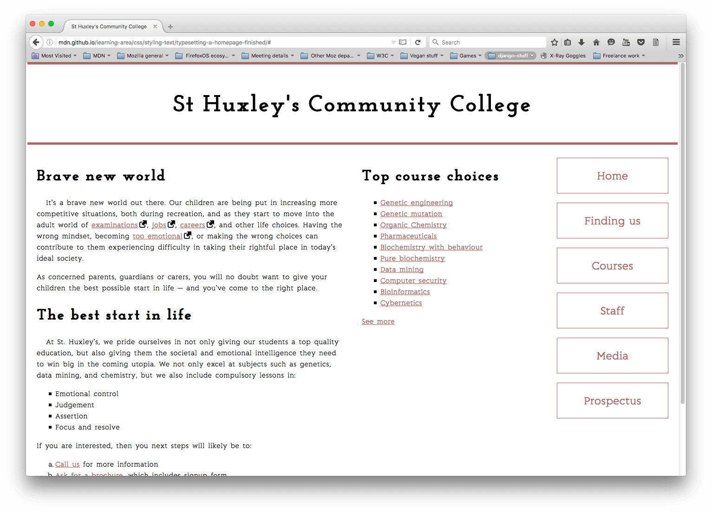

In this assessment we'll test your understanding of all the text styling techniques we've covered throughout this module by getting you to style the text for a community school's homepage. You might just have some fun along the way.
| Prerequisites: | Before attempting this assessment you should have already worked through all the articles in this module. |
|---|---|
| Objective: | To test comprehension of CSS text styling techniques. |
To get this assessment started, you should:
Alternatively, you could use a site like JSBin or Glitch to do your assessment. You could paste the HTML and fill in the CSS into one of these online editors, and use this URL to point the background image. If the online editor you are using doesn't have a separate CSS panel, feel free to put it in a <style> element in the head of the document.
Note: If you get stuck, then ask us for help — see the {{anch("Assessment or further help")}} section at the bottom of this page.
You have been provided with some raw HTML for the homepage of an imaginary community college, plus some CSS that styles the page into a three column layout and provides some other rudimentary styling. You are to write your CSS additions below the comment at the bottom of the CSS file, to make sure it is easy to mark the bits you have done. Don't worry if some of the selectors are repetitious; we'll let you off in this instance.
Fonts:
@font-face code for these two fonts.General text styling:
font-size of 10px.line-height.letter-spacing to make them not too squashed, and allow the letters to breathe a bit.letter-spacing and word-spacing, as appropriate.<section> a little bit of text-indentation, say 20px.Links:
Lists:
line-height as a paragraph line, and each list should have the same spacing at its top and bottom as you have between paragraphs.Navigation menu:
The following screenshot shows an example of what the finished design could look like:

If you would like your work assessed, or are stuck and want to ask for help:
{{PreviousMenu("Learn/CSS/Styling_text/Web_fonts", "Learn/CSS/Styling_text")}}
{kind=link}
{kind=link}